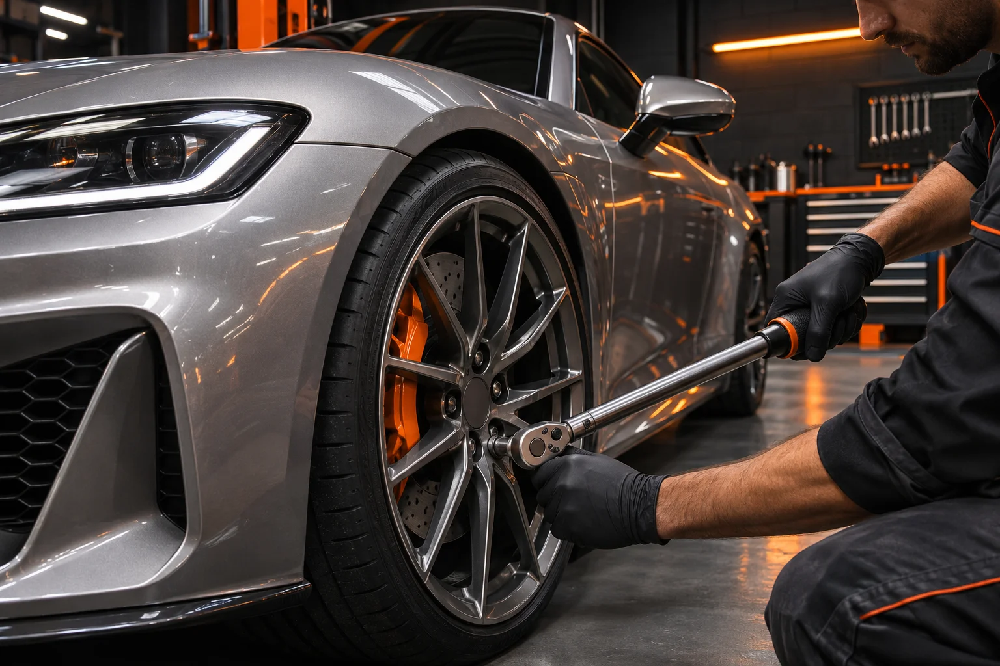

Независимый автосервисДиагностика / ТО / ремонт
Понять.
Починить.
Поехать.
С чего начнём01 / CHECK
Посторонний звук, ошибка или просто пришло время ТО — сначала разберёмся в причине.

Обсуждаем симптомы, осматриваем автомобиль, согласуем работы. Решение о ремонте всегда остаётся за вами.
Плановое обслуживаниеСоберите
Соберите
свой пит-стоп.
Отметьте нужные работы. Калькулятор показывает пример стоимости работ без запчастей и расходников.
Без гадания по звукуСначала факты.
Сначала факты.
Потом ремонт.
- 01
Выслушаем
Когда появился симптом, что менялось в машине, в каких условиях проблема повторяется.
- 02
Проверим
Осмотр и диагностика. Покажем, что требует внимания, а что можно пока оставить.
- 03
Согласуем
Список работ, запчасти, стоимость и срок. Дополнительные работы — после вашего решения.
- 04
Объясним
Что было сделано и на что обратить внимание дальше. Передаём автомобиль после проверки.
Следующая точка маршрутаМеньше вопросов
Меньше вопросов
под капотом.
Расскажите о машине и о том, что беспокоит. Марку, модель и год можно уточнить при обсуждении.